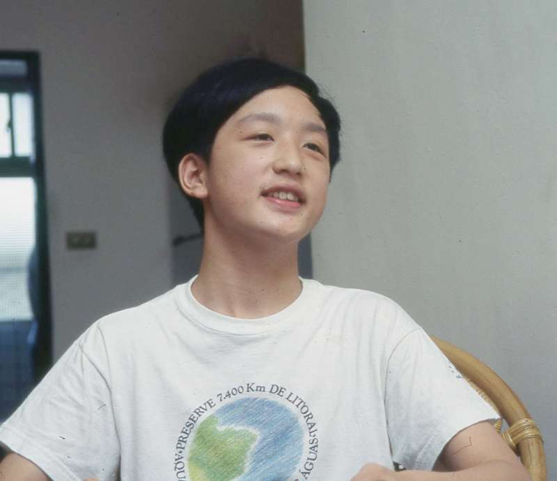

科技力支持自主學習PPT
Table of Contents
1. 自主學習 - What is it and Why do We Need It
1.1. 想到自主學習，你想到誰?
1.1.1. 唐宗漢
- #+CAPTION: 唐宗漢

- 在幼稚園時，曾因為在廁所被同學毆打，而想帶刀上學
- 小學因為不願作弊讓同學看考卷，在班上被同學踢昏。
- 母親李雅卿為孩子教育，挺身實踐教改之路，因而成為台北縣種籽親子實驗小學（種籽學苑）創辦人及首任校長、台北市自主學習實驗計畫主持人
- 台北市自主學習實驗計畫曾被聯合國教科文組織譽為「亞洲最好的另類教育之一」。
- 最高學歷只有國中肄業，但16歲就與人合夥創設電腦公司，當過商業雜誌的封面人物
- 33歲就退休投入網路公益事業
- 35歲被延攬入閣，成為最年輕政務委員
1.1.2. 何達睿
Figure 1: Caption
- 國小四年級第一次接觸Scratch
- 國中準備了3個半月，拿下網際網路程式全國設計大賽（NPSC）第一名
- 進入高中，信心滿滿參加資奧國手選拔，失敗
- 利用一個暑假，全力衝刺免修門檻，開學後每週請 2 天事假，然後訂下 100 天為 1 期的計畫表，規畫 500 天內各階段的目標
- 每天，他花 5 小時練習，為增強體力，他跑操場，研究巧克力補充血糖的效率。
- 「我每一分鐘寫程式的時間都不敢犧牲……，只要螢幕離開寫程式的介面 5 分鐘，愧疚感和恐懼感就會油然而生。」
- 2016年國際資訊奧林匹亞競賽金牌（全球排名第八）
- 目前就讀於MIT美國麻省理工學院。
1.1.3. 以上純粹是一場美麗的誤會
1.2. 必也正名呼 - 那，目前喊的震天響的自主學習指的是什麼
1.2.1. 自主學習的類型
1.2.2. 現階段我們面對的自主學習
1.3. 為何需要自主學習
2. How
2.1. 自主學習的實施模式
理解實際場域的自主學習內涵才能了解需要哪一類輔助工具
3. 科技能提供什麼輔助
3.1. 科技領域教師的優勢
- 先別誤會，我們只是領域中 被迫 用到科技
- 我們未必有利用到科技來輔助學生學習
- BUT
- 所有的資訊領域教師幾乎都是自主學習實踐者